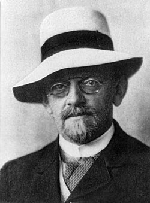

1862-1943
David Hilbert

Portrait: Unknown authorUnknown author, Public domain, Wikimedia Commons.
Events (18)
- 1743Spectral ideas: eigenvalues from vibrating systems and quadratic forms
developer · Algebra
- 1844Liouville and early transcendence theory
developer · Number theory
- 1851Dirichlet's principle
developer · Complex analysis
- 1882Transcendence of pi and the impossibility of squaring the circle
developer · Geometry
- 1887Functional analysis
developer · Functional & harmonic analysis
- 1890Commutative algebra from invariant theory and ideals
developer · Algebra
- 1893Hilbert's Nullstellensatz and algebraic geometry as ideal theory
developer · Algebraic geometry
- 1897Class field theory
developer · Number theory
- 1899Axiomatisation of geometry
developer · Logic & foundations
- 1900Calculus of variations to Hilbert's direct methods
developer · Optimization & control
- 1900Riemann-Hilbert problem and monodromy
developer · Differential equations
- 1903Fredholm integral equations
systematiser · Analysis
- 1907Hilbert space and integral equations
developer · Functional & harmonic analysis
- 1913General relativity and the absolute differential calculus
developer · Mathematical physics
- 1922Hilbert's programme
developer · Logic & foundations
- 1928Hilbert-space quantum mechanics
developer · Functional & harmonic analysis
- 1965Geometric invariant theory and moduli
developer · Algebraic geometry
- 1975Derivation of the Boltzmann equation from hard-sphere dynamics
developer · Analysis